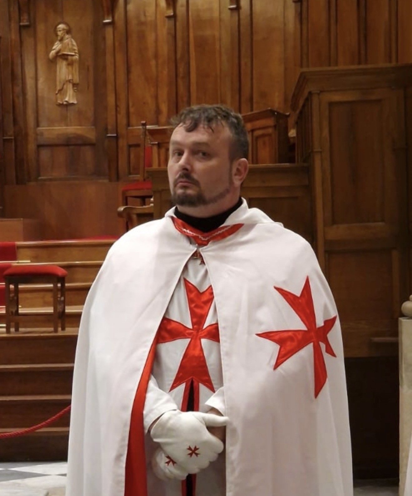

I. Sens de la succession chevaleresque
L’Ordre Sacré des Neuf Templiers de Jérusalem affirme, dans son histoire présente, l’existence d’un ancrage chevaleresque et initiatique transmis au Grand Maître, selon une lignée explicitement mentionnée dans les documents conservés.
Cette succession n’est pas présentée comme une revendication religieuse, apostolique ou ecclésiale de l’association. L’O.S.D.9.T.D.J. demeure une association loi 1901, laïque, culturelle, historique, fraternelle, initiatique et chevaleresque. La succession ici exposée relève d’une transmission chevaleresque et initiatique reçue personnellement, rattachée à une notion de chrétienté primitive, de chevalerie primitive et de continuité intérieure, puis intégrée à la mémoire vivante de l’Ordre dans un esprit de clarté, de prudence et de fidélité traditionnelle.
La succession chevaleresque dont il est ici question est comprise comme une transmission de voie, d’honneur et de responsabilité. Elle ne remplace ni le cadre associatif, ni la liberté intérieure des membres, ni le discernement personnel de chacun ; elle donne toutefois à l’Ordre un axe chevaleresque lisible, assumé et documenté.
Dans cette perspective, la lignée transmise ne doit pas être confondue avec les anciennes étapes institutionnelles liées à d’autres structures. Elle constitue une voie distincte, chevaleresque et initiatique, permettant de comprendre la fonction actuelle du Grand Maître comme dépositaire d’une continuité reçue, assumée et orientée vers le service de l’Ordre.
II. Fontaine d’Honneur, chrétienté primitive et chevalerie primitive
La notion de Fontaine d’Honneur désigne, dans la tradition chevaleresque, la source d’où procède la capacité de transmettre légitimement l’honneur chevaleresque. Elle renvoie à une continuité de reconnaissance, d’investiture et d’adoubement, dont la valeur repose à la fois sur la transmission reçue, sur la régularité de la lignée revendiquée et sur l’honneur de ceux qui la portent.
Dans la lecture traditionnelle ici retenue, cette transmission renvoie également à une notion de chrétienté primitive et de chevalerie primitive : non pas une revendication ecclésiale de l’association, mais une mémoire intérieure de la chevalerie chrétienne ancienne, comprise comme voie de rectitude, de service, de fidélité et de garde spirituelle.
La chevalerie n’est donc pas seulement un titre extérieur. Elle engage une discipline de l’être, une rectitude morale, une verticalité intérieure et une fidélité à une voie. Elle suppose que celui qui reçoit soit lui-même appelé à conserver, servir et transmettre, non par orgueil, mais par responsabilité.
Cette page expose donc la succession chevaleresque telle qu’elle est transmise et documentée dans les pièces conservées, en distinguant clairement le plan chevaleresque et initiatique du plan associatif légal. L’association demeure autonome et laïque ; la transmission donne sens à l’orientation intérieure et chevaleresque de son Grand Maître.
III. Lignée chevaleresque affichée
La succession transmise présente une continuité chevaleresque aboutissant au Grand Maître actuel de l’O.S.D.9.T.D.J. Elle s’inscrit dans une mémoire capétienne et traditionnelle, exprimée par une suite de noms, de dignités et de transmissions.
- Hugues CapetRoi de France.
- Philippe II AugusteRoi de France.
- Louis IX, dit Saint LouisRoi de France ; Grand Maître de l’Ordre de la Cosse de Genêt.
- Robert de ClermontSeigneur de Bourbon ; tige des Bourbons.
- Henri IVRoi de France ; Grand Maître de l’Ordre de Saint-Michel.
- Louis XIII le JusteRoi de France ; Grand Maître de l’Ordre de Saint-Michel.
- Louis XIV le GrandRoi de France ; Grand Maître de l’Ordre de Saint-Michel.
- Philippe V de BourbonRoi d’Espagne ; Grand Maître de l’Ordre de la Toison d’Or.
- Charles III de BourbonRoi d’Espagne ; Grand Maître de l’Ordre de la Toison d’Or.
- Charles IV de BourbonRoi d’Espagne ; Grand Maître de l’Ordre de la Toison d’Or.
- Infant Henri de BourbonDuc de Séville.
- Prince François II de PauleDuc d’Anjou ; Chevalier de l’Ordre de la Toison d’Or.
- Prince François III de PauleDuc de Séville ; Chevalier de l’Ordre de la Toison d’Or ; Grand Maître de l’Ordre de Saint Lazare de Jérusalem.
- Marquis Portafax de Oria
- Pierre Paul Jean NeveuxDuc de Pauver ; Baron du Genièbre.
- Michel SwysenComte d’Aijalon.
- Armand ToussaintArchevêque.
- Tau PhaidrosArchevêque.
- Tau SendivogiusMgr Paul Sanda ; S.B. Bernard-Raymond II.
- Romain MiterniqueGrand Maître de l’Ordre Sacré des Neuf Templiers de Jérusalem (O.S.D.9.T.D.J.).
Cette lignée est présentée comme une succession chevaleresque et initiatique reçue, conservée et assumée. Elle donne à l’O.S.D.9.T.D.J. une orientation chevaleresque explicite, sans transformer l’association en structure religieuse, ni en juridiction ecclésiale.
IV. Tradition antérieure et lecture symbolique
Certains documents et commentaires de tradition évoquent également une dimension plus ancienne, dite parfois antérieure, mystique ou symbolique, rattachant la chevalerie à une mémoire plus profonde que la seule succession historique visible.
Cette section relève d’une lecture symbolique et initiatique. Elle ne constitue pas une affirmation historique au sens académique moderne ; elle présente une mémoire traditionnelle, telle qu’elle peut être reçue dans certains courants chevaleresques, ésotériques ou mystiques.
Dans cette perspective, la succession chevaleresque visible depuis Hugues Capet serait précédée par une mémoire plus ancienne, dite issue de la « nuit des temps », où la chevalerie est comprise comme une puissance d’ordre, de protection, de transmission et de service.
- 5ᵉ génération
Carloman, Pépin Ier d’Italie, Ingeltrude d’Autun, Guillaume Ier de Gellone, Cunégonde d’Austrasie. - 6ᵉ génération
Charlemagne, Empereur d’Occident, Hildegarde de Vintzgau, Thierry Ier d’Autun, Aude de France, Carloman d’Austrasie, Gerberge de Lombardie. - 7ᵉ génération
Pépin III de France, Berthe de Laon, Charles Martel de France. - 8ᵉ génération
Pépin II d’Héristal, Alpaïs de Bruyères, Liévin de Trèves « le Saint », Caribert Ier de Laon, Irmine d’Oeren. - 9ᵉ génération
Ansegisel de Metz, Begga de Landen, Théodon II de Bavière. - 10ᵉ génération
Arnould de Metz, Dode de Schelde, Pépin Ier de Landen, Childebert d’Austrasie. - 11ᵉ génération
Bodogisel d’Aquitaine, Oda de Savoie, Arnould de Schelde, Oda de Souabie, Carloman de Landen, Grimoald d’Aquitaine, Ite de Gascogne. - 15ᵉ génération
Sigebert de Cologne, Théodelinde des Burgondes, Godogisel Galains de Genève, Théodelinde de Septimanie. - 17ᵉ génération
Nascien Ier de Septimanie, appelé Gondicaire de Burgondie, Childéramna de France, Réchiaire de Suévie. - 18ᵉ génération
Théodemer de Toxandrie, Blésinde de Cologne, Marcomire V, roi sicambre, Hildegonde de Lombardie, Frédémond roi pêcheur, Sunno de France, Mérowna de Thuringe. - 21ᵉ génération
Boaz Anfortas, roi pêcheur. - 26ᵉ génération
Aminadab Ap Joshua, Eurgen de Cumbrie. - 27ᵉ génération
José Faye, Josephé dans la légende du Graal, Lucius Mawr d’Ewyas, Gladys des Trinovantes. - 28ᵉ génération
Yeshuah-Joseph, fils de Jésus et Marie-Madeleine, Coël Ier de Camulot, Ystradwl de Silurie, Eurgen Ap Meurig des Trinovantes. - 30ᵉ génération
Arviragus de Silurie, Prastugasus d’Icénie, Boadicée d’Icénie, Caradoc Séraphé de Bretagne, Rathérius, roi sicambre, fils de Sarah-Damaris. - 31ᵉ génération
Anthénor IV, roi sicambre, époux de Sarah-Damaris, fille de Jésus et Marie-Madeleine.
Cette mémoire imaginale est proposée comme un espace d’approfondissement et non comme une obligation de croyance. Elle appartient à la part symbolique de la chevalerie, à ce que certains nomment la Fontaine d’Honneur, et laisse chaque lecteur libre d’en recevoir le sens selon son propre discernement.
V. Aboutissement actuel dans l’O.S.D.9.T.D.J.
L’aboutissement actuel de cette succession se comprend dans une logique de service : servir la mémoire templière, servir l’honneur chevaleresque, servir la recherche intérieure, servir la fraternité et maintenir une structure claire, autonome et responsable.
La transmission reçue par le Grand Maître n’est donc pas seulement une référence généalogique ou symbolique. Elle engage une fonction : maintenir une voie, protéger une orientation, transmettre une exigence morale et faire vivre une chevalerie contemporaine adaptée au cadre légal, culturel et initiatique de l’Ordre.
Transmission chevaleresque actuelle
Tau Sendivogius – S.B. Bernard-Raymond II
Grand Maître de l’Ordre Sacré des Neuf Templiers de Jérusalem (O.S.D.9.T.D.J.)
Ainsi, l’O.S.D.9.T.D.J. reconnaît dans cette succession une continuité chevaleresque et initiatique valide, reçue et assumée par son Grand Maître, tout en maintenant la distinction nécessaire entre transmission personnelle, mémoire traditionnelle et cadre associatif public.
VI. Documents justificatifs et pièces consultables
Les documents de référence peuvent être consultés dans un nouvel onglet par les visiteurs qui souhaitent vérifier les pièces documentaires liées à l’investiture, à l’adoubement chevaleresque, à la ligne de succession transmise et aux étapes antérieures du parcours chevaleresque.
Les pièces présentées ci-dessous relèvent de deux registres distincts : d'une part la succession chevaleresque et initiatique principale exposée sur cette page, transmise par la lignée aboutissant à Mgr Paul Sanda — Tau Sendivogius — puis à Romain Miternique ; d'autre part les documents relatifs à l'Ordine Cavalleresco Nostra Signora di Sion, comprenant l'acte de reconnaissance délivré en 2022 par la Maison Paternò Leopardi de Constantinople et l'adoubement reçu en 2024 de Luigi Suez.
Document d’investiture et d’adoubement
Acte d’investiture et d’adoubement chevaleresque reçu dans le cadre de la transmission chevaleresque et initiatique personnelle du Grand Maître.
✠ Voir l’adoubementTable officielle de succession
Tableau chronologique de la succession chevaleresque aboutissant au chevalier Romain Miternique, Grand Maître de l’O.S.D.9.T.D.J.
✠ Voir la successionAdoubement Nostra Signora di Sion
Diplôme nominatif délivré à Romain Miternique le 27 juillet 2024 à Gallipoli par Luigi Suez, Grand Maître de l'Ordine Cavalleresco Nostra Signora di Sion. Ce document atteste sa réception comme chevalier au sein de cet ordre et constitue une étape importante de son parcours chevaleresque personnel.
✠ Voir SionReconnaissance Paternò Leopardi (2022)
Acte de reconnaissance délivré le 12 juillet 2022 par S.A.I. le Prince Ezra Annibale Theo Paterniano Paternò Leopardi de Constantinople en faveur du « Sovrano Augusto Ordine dei Cavalieri di Nostra Signora di Sion ». Ce document reconnaît officiellement l'Ordre dirigé par Luigi Suez et constitue l'un des fondements documentaires de sa légitimité revendiquée.
✠ Voir la reconnaissancePour les développements plus personnels, spirituels, symboliques et doctrinaux liés à cette transmission, le lecteur peut consulter la chronique du Grand Maître.